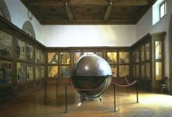
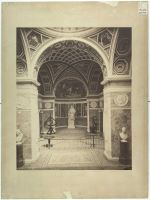
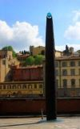
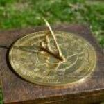

Museo Galileo

Muesum and its history
In recent decades the Istituto e Museo di Storia della Scienza has experienced a strong expansion with the growth of visibility of the museum activities and the organization of temporary exhibitions, as well as with the impressive increase in library collections, the assiduous commitment to promoting research, the dense publication of journals and volumes and the massive investment in information and communication technology at the service of historical-scientific research.
Origin of the Museum

The name Museo Galileo was adopted in 2010 after a radical renovation of the museum’s premises and contents. The subtitle Istituto e Museo di Storia della scienza provides a link to its earlier history and shows that the institution keeps considering the activities of documentation and research the focus of highest attention.
The Monumental Sundial
A Mathematical Ornament

The monumental sundial was built in 2007 as a “mathematical ornament” for the Museo Galileo.
Well known since antiquity, the sundial is a time-measuring instrument made up by a style casting a shadow on a quadrant. Its functioning is based on the observation of the style’s shadow combined with the notion of the Sun as a time-keeper apparently revolving around the immobile Earth in a uniform daily motion.
How The Sundial Works

The shadow cast by the glass polyhedron atop the large bronze gnomon indicates the date and time. The hours from 9:00 AM to 2:00 PM are marked out by radial brass lines. The date is indicated by the travertine traversal lines which mark the Sun’s diurnal course for various periods of the year – precisely when the Star enters the signs of the Zodiac. The shadow cast by the gnomon changes in length during the course of the days and seasons, and indicates true solar time for the place where it is located, which is a different time than that of our wristwatches, known as mean time. In respect to mean time, true solar time has a periodic variation that can exceed a quarter of an hour.
How long should I plan for my visit to the Museum?
An average visit lasts about 1-2 hours.
Does the Museum offer birthday parties?
We are sorry, but at the moment we do not have rooms available for birthday parties.
Should I book the entrance in advance?
For individual visitors it is not necessary. Reservation is mandatory for groups and school groups of minimum 15 people, and for those who wish to participate in one of our guided visits or workshops.
Which is the best period to visit the museum?
In March and April the halls are crowded with school groups, while in the summer months we have a large number of tourists visiting our collections. For a more comfortable experience, we suggest you to plan your visit in Autumn or Winter (National Holidays excluded).
Is the museum free every first Sunday of the month?
The “Domenica al Museo” is promoted by state-owned Museums, while the “Domenica metropolitana” applies to Florentine Civic Museums. The Museo Galileo is a private institution, so it does not adhere to those initiatives.
Find out which special promotions are currently available at Information.
Is the museum suitable for children?
The Museo Galileo is a museum of the history of science and not a science center. It focuses on the history of science and the historical approach to the collections is the dominant one. We suggest families with children to book one of our guided visits or educational workshops, which can be tailored to any age. More info at Museum activities for the general public.
If you visit the museum by yourself, children under 7-8 might find it difficult to understand.
What resources are available to help me plan my visit to the Museum?
The Museo Galileo web site has plenty of contents, in-depth information and tools to prepare the visit. You can browse the Permanent Exhibition, or download the mini-guides, available in several languages. Moreover, we remind you of the Museo Galileo App, which is available for smartphone and tablet for free.
To teachers: we recommend the online didactics pages of our website.
How can I be updated with the latest museum news?
You only need to send us an email at info@museogalileo.it writing SIGN ME IN in the object line and we will be pleased to include you in our mailing list. The Museo Galileo is a Research Institute and so you’ll receive not only information about museum’s events, but also about research projects, exhibitions, conferences,book launches and much more. You will be able to cancel your subscription at any time. The Museo Galileo is also on Facebook and Twitter.